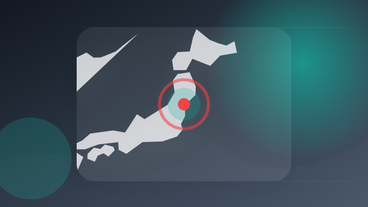
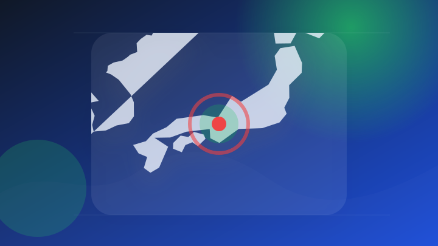
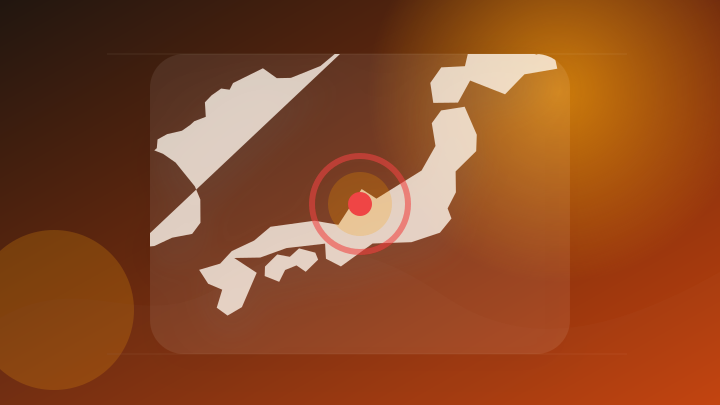

AI
6 topics
【AIが“穴”を探し出す】脆弱性発見AI「Mythos」が企業に問うもの - thinkit.co.jp
【AIが“穴”を探し出す】脆弱性発見AI「Mythos」が企業に問うもの thinkit.co.jp
- 注目ポイント
- 脆弱性・AI｜出典: thinkit.co.jp
- 見るべきポイント
- 対象製品・バージョン、利用可能時期、影響範囲と必要な対応を確認。
AIに仕事を奪われた私が、ChatGPTを「頼もしい相棒」に変えて転職に成功した話 (ライフハッカー・ジャパン) - Yahoo!ニュース
AIに仕事を奪われた私が、ChatGPTを「頼もしい相棒」に変えて転職に成功した話 (ライフハッカー・ジャパン)…
- 注目ポイント
- ChatGPT｜出典: Yahoo!ニュース
- 見るべきポイント
- 誰に影響するか、いつから変わるか、報道元が示す具体的な根拠を確認。
ChatGPT iPhoneユーザー向けに大きなアップデートが行われます。 Apple ズドラヴィ - Letem světem Applem
ChatGPT iPhoneユーザー向けに大きなアップデートが行われます。 Apple ズドラヴィ Letem s…
- 注目ポイント
- ChatGPT・Apple｜出典: Letem světem Applem
- 見るべきポイント
- 対象製品・バージョン、利用可能時期、影響範囲と必要な対応を確認。
脳科学×AIで「伸びる人」を発掘「AI活用適性診断」正式リリース・提供開始 - ニコニコニュース
脳科学×AIで「伸びる人」を発掘「AI活用適性診断」正式リリース・提供開始 ニコニコニュース
- 注目ポイント
- AI・開始｜出典: ニコニコニュース
- 見るべきポイント
- 対象製品・バージョン、利用可能時期、影響範囲と必要な対応を確認。
OpenAIが最新AIエージェントを発表！ 1回頼めば自動でパソコン画面を操作し仕事が一瞬で終わる - DXマガジン
OpenAIが最新AIエージェントを発表！ 1回頼めば自動でパソコン画面を操作し仕事が一瞬で終わる DXマガジン
- 注目ポイント
- OpenAI・発表｜出典: DXマガジン
- 見るべきポイント
- 誰に影響するか、いつから変わるか、報道元が示す具体的な根拠を確認。
01.AIは「中国版OpenAI」を捨てて上場できるのか 李開復が選んだ中国AIの現実路線｜吉川真人＠中国テックトレンドニュース - note
01.AIは「中国版OpenAI」を捨てて上場できるのか 李開復が選んだ中国AIの現実路線
- 注目ポイント
- OpenAI｜出典: note
- 見るべきポイント
- 誰に影響するか、いつから変わるか、報道元が示す具体的な根拠を確認。
IT業界
5 topics
福西電機、7/24にグランフロント大阪で製造業のサイバーセキュリティ規制対応セミナー - オートメーション新聞
福西電機、7/24にグランフロント大阪で製造業のサイバーセキュリティ規制対応セミナー オートメーション新聞
- 注目ポイント
- セキュリティ・規制｜出典: オートメーション新聞
- 見るべきポイント
- 対象になる人、決定済みか検討中か、施行日・申請期限を確認。
MUFGがGoogleと戦略的提携 リテール総合金融、AIでSMBCより「先行」狙う - 日経クロステック
MUFGがGoogleと戦略的提携 リテール総合金融、AIでSMBCより「先行」狙う 日経クロステック
- 注目ポイント
- AI・Google｜出典: 日経クロステック
- 見るべきポイント
- 誰に影響するか、いつから変わるか、報道元が示す具体的な根拠を確認。
◎サイバーセキュリティアンバサダー任命 - 時事通信ニュース
◎サイバーセキュリティアンバサダー任命 時事通信ニュース
- 注目ポイント
- セキュリティ｜出典: 時事通信ニュース
- 見るべきポイント
- 誰に影響するか、いつから変わるか、報道元が示す具体的な根拠を確認。
Google、アカウントログイン方法に「自撮り動画」を追加 ロックアウト時の復旧を容易に - 産経ニュース
Google、アカウントログイン方法に「自撮り動画」を追加 ロックアウト時の復旧を容易に 産経ニュース
- 注目ポイント
- 復旧・Google｜出典: 産経ニュース
- 見るべきポイント
- 誰に影響するか、いつから変わるか、報道元が示す具体的な根拠を確認。
アムコー・テクノロジーは時間外で大幅高推移＝米国株個別(株探ニュース) - Yahoo!ファイナンス
アムコー・テクノロジーは時間外で大幅高推移＝米国株個別(株探ニュース) Yahoo!ファイナンス
- 注目ポイント
- アムコー・テクノロジーは時間外で大幅高推移＝米国株個別(株探ニュース)｜出典: Yahoo!ファイナンス
- 見るべきポイント
- 誰に影響するか、いつから変わるか、報道元が示す具体的な根拠を確認。
政治
4 topics
【参院沖北特委】副首都法案、付帯決議に住民投票と通常選挙の同日選「重複しないように調整する」盛り込む - 立憲民主党
【参院沖北特委】副首都法案、付帯決議に住民投票と通常選挙の同日選「重複しないように調整する」盛り込む 立憲民主党
- 注目ポイント
- 法案｜出典: 立憲民主党
- 見るべきポイント
- 対象になる人、決定済みか検討中か、施行日・申請期限を確認。
副首都法が成立 与党提出、野党は反対―特別国会、事実上閉幕 - 時事ドットコム
副首都法が成立 与党提出、野党は反対―特別国会、事実上閉幕 時事ドットコム
- 注目ポイント
- 副首都法が成立・与党提出・野党は反対―特別国会｜出典: 時事ドットコム
- 見るべきポイント
- 誰に影響するか、いつから変わるか、報道元が示す具体的な根拠を確認。
「異例の国会」が事実上閉会 高市首相出席の集中審議は近年の半分 [高市早苗首相] - 朝日新聞
「異例の国会」が事実上閉会 高市首相出席の集中審議は近年の半分 [高市早苗首相] 朝日新聞
- 注目ポイント
- 「異例の国会」が事実上閉会・高市首相出席の集中審議は近年の半分・[高市早苗首相]｜出典: 朝日新聞
- 見るべきポイント
- 誰に影響するか、いつから変わるか、報道元が示す具体的な根拠を確認。
副首都法が成立 国会閉会へ 高市首相、強硬な国会運営に終始 - 毎日新聞
副首都法が成立 国会閉会へ 高市首相、強硬な国会運営に終始 毎日新聞
- 注目ポイント
- 副首都法が成立・国会閉会へ・高市首相｜出典: 毎日新聞
- 見るべきポイント
- 誰に影響するか、いつから変わるか、報道元が示す具体的な根拠を確認。
社会
4 topics

ため池小1男児死亡の損害賠償裁判 市側は一部責任を認めるも原告の過失を主張 宮城・栗原市 - TBS NEWS DIG
ため池小1男児死亡の損害賠償裁判 市側は一部責任を認めるも原告の過失を主張 宮城・栗原市 TBS NEWS DIG
- 注目ポイント
- 裁判｜出典: TBS NEWS DIG
- 見るべきポイント
- 発生場所と時刻、警察・消防など公的機関の発表、続報で変わった点を確認。
宮古島市贈収賄事件 逮捕の市職員ら2人送検 - QAB 琉球朝日放送
宮古島市贈収賄事件 逮捕の市職員ら2人送検 QAB 琉球朝日放送
- 注目ポイント
- 逮捕｜出典: QAB 琉球朝日放送
- 見るべきポイント
- 発生場所と時刻、警察・消防など公的機関の発表、続報で変わった点を確認。
国会あす会期末 駆け引きは夜まで続くか 「副首都法案」めぐり与野党の攻防が最終局面 - au Webポータル
国会あす会期末 駆け引きは夜まで続くか 「副首都法案」めぐり与野党の攻防が最終局面 au Webポータル
- 注目ポイント
- 法案｜出典: au Webポータル
- 見るべきポイント
- 対象になる人、決定済みか検討中か、施行日・申請期限を確認。
最高裁判決を踏まえた生活保護費等の追加給付について - city.gosen.lg.jp
最高裁判決を踏まえた生活保護費等の追加給付について city.gosen.lg.jp
- 注目ポイント
- 裁判｜出典: city.gosen.lg.jp
- 見るべきポイント
- 対象になる人、決定済みか検討中か、施行日・申請期限を確認。
事件・事故
4 topics
「これから強盗に行く」 職務質問で闇バイト発覚 男ら3人を現行犯逮捕 トクリュウか - 産経ニュース
「これから強盗に行く」 職務質問で闇バイト発覚 男ら3人を現行犯逮捕 トクリュウか 産経ニュース
- 注目ポイント
- 逮捕｜出典: 産経ニュース
- 見るべきポイント
- 発生場所と時刻、警察・消防など公的機関の発表、続報で変わった点を確認。

詐欺など疑いで逮捕の司法書士男性、不起訴 京都地検「捜査尽くした結果」 - 京都新聞デジタル
詐欺など疑いで逮捕の司法書士男性、不起訴 京都地検「捜査尽くした結果」 京都新聞デジタル
- 注目ポイント
- 逮捕｜出典: 京都新聞デジタル
- 見るべきポイント
- 発生場所と時刻、警察・消防など公的機関の発表、続報で変わった点を確認。
【キャッシュカードを袋に】台湾籍の男（35歳）逮捕、ニセ警察官詐欺 - にいがた経済新聞
【キャッシュカードを袋に】台湾籍の男（35歳）逮捕、ニセ警察官詐欺 にいがた経済新聞
- 注目ポイント
- 逮捕｜出典: にいがた経済新聞
- 見るべきポイント
- 発生場所と時刻、警察・消防など公的機関の発表、続報で変わった点を確認。

北陸先端科学技術大学院大学の入試で“替え玉受験”に関与か 日本人と中国籍の女2人を逮捕 実行役も捜査（石川テレビ） - Yahoo!ニュース
北陸先端科学技術大学院大学の入試で“替え玉受験”に関与か 日本人と中国籍の女2人を逮捕 実行役も捜査（石川テレビ）…
- 注目ポイント
- 逮捕｜出典: Yahoo!ニュース
- 見るべきポイント
- 発生場所と時刻、警察・消防など公的機関の発表、続報で変わった点を確認。
芸能人の結婚・離婚・交際
4 topics

速報！最近結婚した芸能人・有名人は？【2026年 芸能人結婚入籍】結婚を発表した芸能人、有名人を総まとめしました♡妊娠出産情報もチェック！ - dressy.pla-cole.wedding
速報！最近結婚した芸能人・有名人は？【2026年 芸能人結婚入籍】結婚を発表した芸能人、有名人を総まとめしました♡…
- 注目ポイント
- 発表｜出典: dressy.pla-cole.wedding
- 見るべきポイント
- 本人・所属事務所の発表有無、報道元、報道時刻と続報を確認。
『新婚さん』イケメン夫のプロフィールに妻「まるで芸能人」 3時間限定デート→キスから国際結婚 - ｄメニューニュース
『新婚さん』イケメン夫のプロフィールに妻「まるで芸能人」 3時間限定デート→キスから国際結婚 ｄメニューニュース
- 注目ポイント
- 『新婚さん』イケメン夫のプロフィールに妻「まるで芸能人」・3時間限定デート→キスから国際結婚｜出典: ｄメニューニュース
- 見るべきポイント
- 本人・所属事務所の発表有無、報道元、報道時刻と続報を確認。
見取り図リリー 女子アナとの結婚はコンプラ違反？ 強烈ツッコミ「だから、ダメなんです」 - ｄメニューニュース
見取り図リリー 女子アナとの結婚はコンプラ違反？ 強烈ツッコミ「だから、ダメなんです」 ｄメニューニュース
- 注目ポイント
- 見取り図リリー・女子アナとの結婚はコンプラ違反？・強烈ツッコミ「だから｜出典: ｄメニューニュース
- 見るべきポイント
- 本人・所属事務所の発表有無、報道元、報道時刻と続報を確認。
【AKB48 結婚一覧】AKB48グループで結婚したのは誰？神7は？人気メンバーから最新速報まで既婚者一覧を年代別にまとめました - dressy.pla-cole.wedding
【AKB48 結婚一覧】AKB48グループで結婚したのは誰？神7は？人気メンバーから最新速報まで既婚者一覧を年代別…
- 注目ポイント
- 【AKB48・結婚一覧】AKB48グループで結婚したのは誰？神7は？人気メンバーから最新速報まで既婚者一覧を年代別にまとめました・dressy.pla｜出典: dressy.pla-cole.wedding
- 見るべきポイント
- 本人・所属事務所の発表有無、報道元、報道時刻と続報を確認。
災害
3 topics
ベネズエラ地震1カ月 死者5300人 - Yahoo!ニュース
ベネズエラ地震1カ月 死者5300人 Yahoo!ニュース
- 注目ポイント
- 地震｜出典: Yahoo!ニュース
- 見るべきポイント
- 対象地域、発生・更新時刻、自治体や気象機関の最新情報を確認。
【台風情報】台風12号「ノウル」発生 気象庁発表 さらに「気がかりな渦」も 今後の進路は ※24日午後6時現在（RCC中国放送） - Yahoo!ニュース
【台風情報】台風12号「ノウル」発生 気象庁発表 さらに「気がかりな渦」も 今後の進路は ※24日午後6時現在（R…
- 注目ポイント
- 台風・発表｜出典: Yahoo!ニュース
- 見るべきポイント
- 対象地域、発生・更新時刻、自治体や気象機関の最新情報を確認。
「災害時におけるキッチンカーによる炊き出しの実施等に関する協定」の締結について - town.togitsu.nagasaki.jp
「災害時におけるキッチンカーによる炊き出しの実施等に関する協定」の締結について town.togitsu.naga…
- 注目ポイント
- 災害｜出典: town.togitsu.nagasaki.jp
- 見るべきポイント
- 対象地域、発生・更新時刻、自治体や気象機関の最新情報を確認。
経済
5 topics
米企業、好決算相次ぐも株価の反応鈍く－高過ぎる期待が重し - Bloomberg.com
米企業、好決算相次ぐも株価の反応鈍く－高過ぎる期待が重し Bloomberg.com
- 注目ポイント
- 決算｜出典: Bloomberg.com
- 見るべきポイント
- 対象期間、金額・変化率、前回との比較、生活や市場への影響を確認。
軟調、日米韓のハイテク企業決算や中銀イベント見極め＝来週の東京株式市場 - ロイター
軟調、日米韓のハイテク企業決算や中銀イベント見極め＝来週の東京株式市場 ロイター
- 注目ポイント
- 決算｜出典: ロイター
- 見るべきポイント
- 対象期間、金額・変化率、前回との比較、生活や市場への影響を確認。
【米国株】ハイテク・AI関連の調整は一時的か？アルファベットやテスラの決算が焦点の週に - マネクリ
【米国株】ハイテク・AI関連の調整は一時的か？アルファベットやテスラの決算が焦点の週に マネクリ
- 注目ポイント
- 決算・AI｜出典: マネクリ
- 見るべきポイント
- 対象期間、金額・変化率、前回との比較、生活や市場への影響を確認。
AIインフラ株が急落。大手ハイテク企業の決算発表でトレードは復活するか？ - Moomoo
AIインフラ株が急落。大手ハイテク企業の決算発表でトレードは復活するか？ Moomoo
- 注目ポイント
- 決算・AI・発表｜出典: Moomoo
- 見るべきポイント
- 対象期間、金額・変化率、前回との比較、生活や市場への影響を確認。
日経平均は380円高、引き続き米企業決算などに関心(フィスコ) - Yahoo!ファイナンス
日経平均は380円高、引き続き米企業決算などに関心(フィスコ) Yahoo!ファイナンス
- 注目ポイント
- 決算｜出典: Yahoo!ファイナンス
- 見るべきポイント
- 対象期間、金額・変化率、前回との比較、生活や市場への影響を確認。
ゲーム
4 topics
プレイステーションネットワークで7月24日20時ごろより障害発生中。サインインやゲーム起動などネットワークサービスが利 - ニコニコニュース
プレイステーションネットワークで7月24日20時ごろより障害発生中。サインインやゲーム起動などネットワークサービス…
- 注目ポイント
- 障害｜出典: ニコニコニュース
- 見るべきポイント
- 対象製品・バージョン、利用可能時期、影響範囲と必要な対応を確認。
PlayStationの物理ディスク生産終了後には、“1兆円規模”中古ゲーム市場がいずれ消滅するとアナリストが警鐘。一方Ubisoftは「大きな混乱なし」と予測、割れる見立て - AUTOMATON
PlayStationの物理ディスク生産終了後には、“1兆円規模”中古ゲーム市場がいずれ消滅するとアナリストが警鐘…
- 注目ポイント
- 終了｜出典: AUTOMATON
- 見るべきポイント
- 誰に影響するか、いつから変わるか、報道元が示す具体的な根拠を確認。
クロックス、任天堂とタッグを組んだ「スーパーマリオ コレクション」を発売！「キノコ王国」の世界観を表現 - gamebiz【ゲームビズ】
クロックス、任天堂とタッグを組んだ「スーパーマリオ コレクション」を発売！「キノコ王国」の世界観を表現 gameb…
- 注目ポイント
- クロックス・任天堂とタッグを組んだ「スーパーマリオ・コレクション」を発売！「キノコ王国」の世界観を表現｜出典: gamebiz【ゲームビズ】
- 見るべきポイント
- 対象製品・バージョン、利用可能時期、影響範囲と必要な対応を確認。
「ガンダムカードゲーム」1周年記念ブースターパック「Freedom Ascension [GD05]」ほか関連アイテム全4点が7月25日発売！ - GUNDAM Official Website
「ガンダムカードゲーム」1周年記念ブースターパック「Freedom Ascension [GD05]」ほか関連アイ…
- 注目ポイント
- 「ガンダムカードゲーム」1周年記念ブースターパック「Freedom・Ascension・[GD05]」ほか関連アイテム全4点が7月25日発売！｜出典: GUNDAM Official Website
- 見るべきポイント
- 対象製品・バージョン、利用可能時期、影響範囲と必要な対応を確認。
金融
0 topics
前日範囲で十分な公開情報を取得できませんでした。